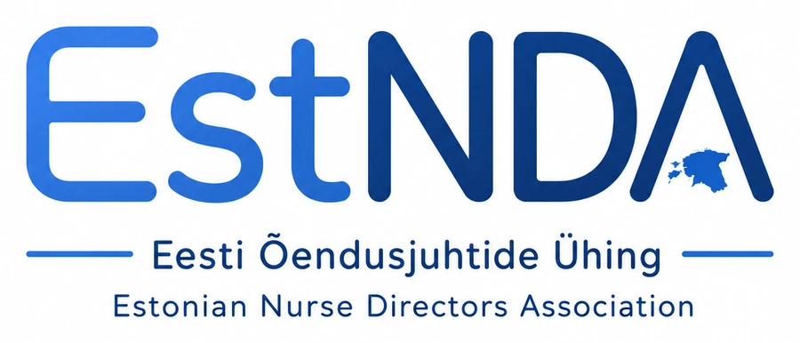
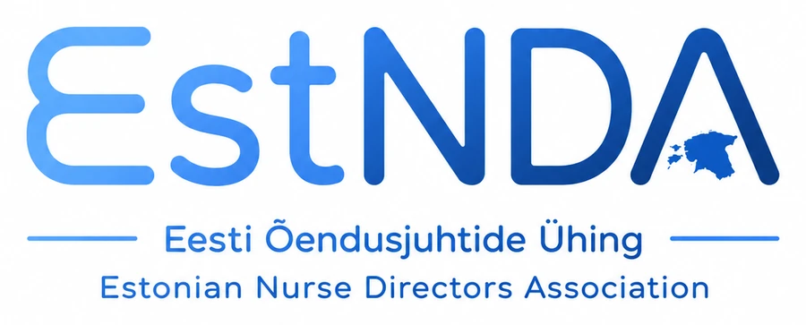
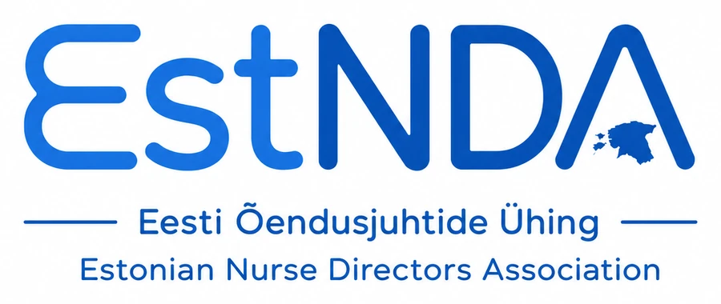
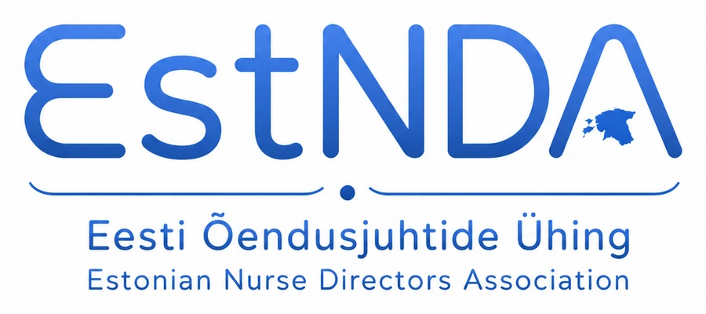
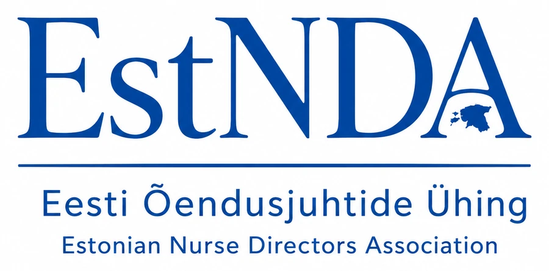
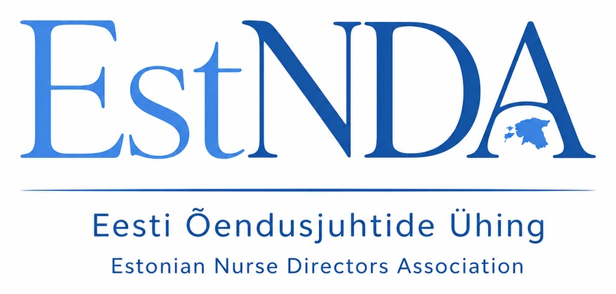
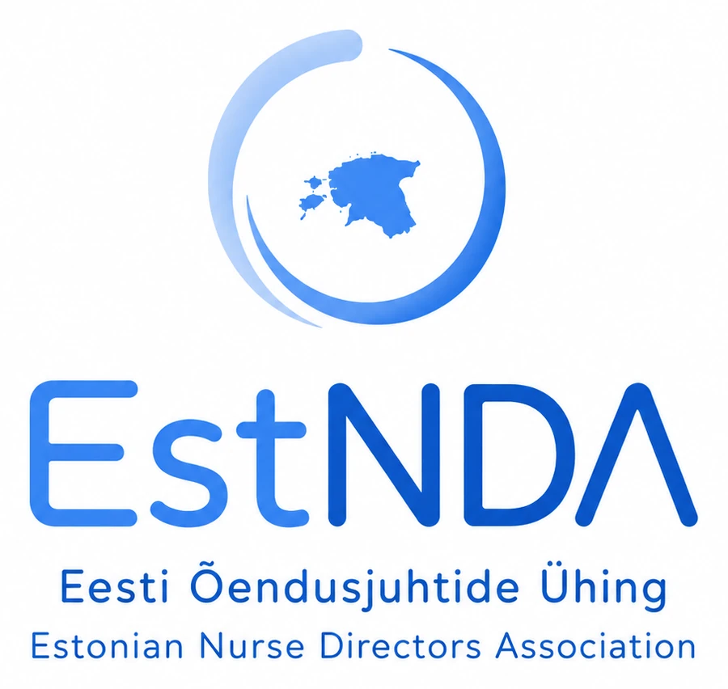
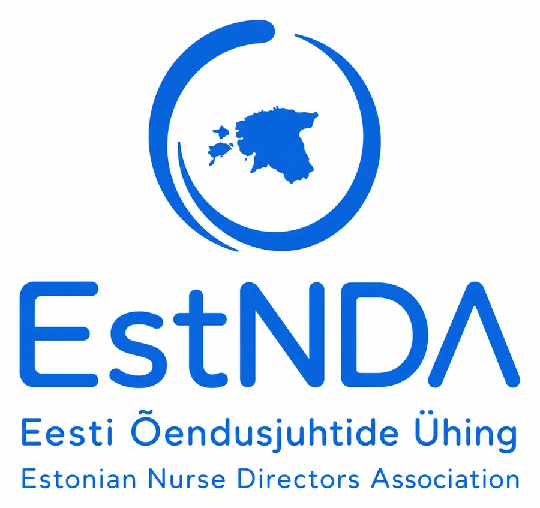
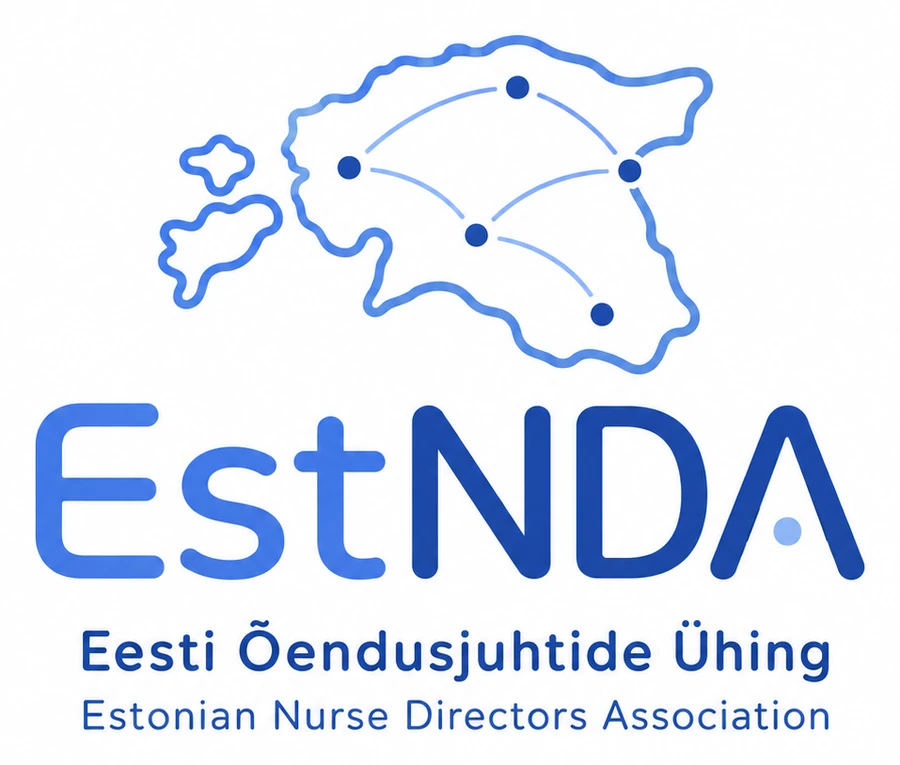

Ühingu uus logo
Üheksa kavandit. Vaata need enne kohtumist läbi ja tule oma eelistusega valmis — valik tehakse üldkogul.
Millest lähtume
Praegune EstNDA märk on olnud kasutusel dokumentidel, päevakavadel ja esitlustel. Uued kavandid hoiavad sama sinist värvigammat ja lühendit, kuid pakuvad erinevaid lahendusi kirjatüübile ja sümbolile.
Arutelul tasub mõelda kolmele asjale: kuidas märk töötab väikeses mõõdus (näiteks kirja allkirjas), kas ta on äratuntav ühevärvilisena, ja kas ta sobib kokku rahvusvahelise ENDA kontekstiga.
Vali oma lemmik
Klõpsa kavandil, et seda suurelt vaadata. Märgi lemmikud linnukesega — nimekiri tekib lehe lõppu, et saaksid oma eelistused üldkogule kaasa võtta.









Sinu eelistused: veel valimata
Märkmed jäävad ainult sinu brauserisse selle külastuse ajaks — neid ei salvestata ega saadeta kuhugi.
Otsus sünnib üldkogul
Logo valik on 19. augusti üldkogu päevakorras. Tule kohale ja ütle oma sõna.
Üldkogu päevakord